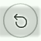

Timer
A timer is a specialized type of clock used for measuring specific time intervals.
Click on the icon on the left navigation toolbar to open the Timer section.
1 minute, 3 minute, 5 minute, 10 minute timers would be present by default. These Timers can be started, reset and edited to customize user needs.
- Click the play icon to start the timer of your choice.
- Click the Reset icon to reset the timer.
- Click the Expand icon to expand the timer view.
- Click the Restore icon to minimize the expanded view.
- Click the Keep on Top
 icon to pin the timer to the top of the screen.
icon to pin the timer to the top of the screen. - In order to edit any of the timers, right click your mouse button over the timer,
select "Edit"
 and edit it as required.
and edit it as required. - In order to delete a timer, right click your mouse button over the timer, select
"Delete"
 .
. - In order to add a new timer, click the "Add timer" icon
 on the bottom right of the window.
on the bottom right of the window.